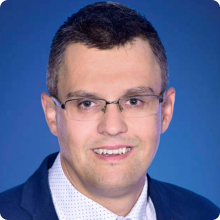

Ing. Josef Treml
Josef Treml is a current headmaster and a teacher at our school, teaching electrotechnic subjects such as mechanical engineering.
Ing. Aleš Fojtík, PhD.
Aleš Fojtík is a current Chief Revenue Officer (CRO) at Srovnejto Group, having rich experience in the finance world and appearing on television frequently.